SAR Atlas 演示场景
给药物化学家看的六个完整用例。每个场景从一个实际问题出发，写明操作步骤、系统给出的结果和它刻意不做的推断。截图均来自真实运行的工作台，数据是已整理的 ALK 案例（洛拉替尼相关论文与两份 Pfizer 专利）。
演示前准备
python -m pip install -r requirements-agent.txt python -m phase0.sar.serve --port 8766 --ledger-db artifacts/ledger.sqlite
终端出现 Open http://127.0.0.1:8766 后打开 http://127.0.0.1:8766/（专利工作台）和 /evidence（六步工作流），运行服务的窗口保持打开。场景 1、2 要读取专利页面，演示前在联网状态下先各走一遍，让页面进入本地缓存；场景 3–6 完全离线。
竞品专利里到底测了什么
“我想快速看洛拉替尼专利里几个代表性实施例的结构和活性，每个数都要能回到原文核对。”
操作
- 首页输入
WO2013132376A1，点“检索专利”。 - 停在“分子证据卡”标签。
- 展开任一卡片的“实验条件与核对说明”。
看什么
- WT ALK 酶 Ki 显示为
<0.200 nM，限定符原样保留，不当作 0.2 参与计算。 - 结构链接到 PDF 第 260 / 264 / 268 页，活性链接到 Table 1 对应行。
- 质谱校验：原文 [M+H]+ 407 / 393 / 382 与转录结构一致（整数报告值，容差 ±0.6 Da）。
- 每个实验的协议和出处（PDF 第 435–436 页）写在卡片里。
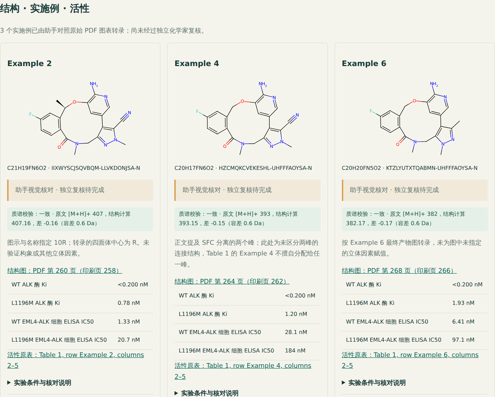
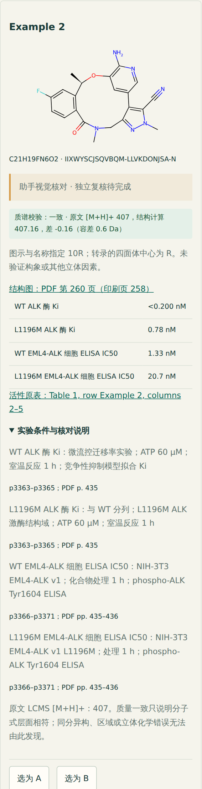
讲解要点
每个数都能点回 PDF 原页；限定值、未测和转录状态都显式标出。系统不替化学家判断立体构型，原文没区分的地方就保留“未区分”。
早期专利和大环化专利是什么关系
“Pfizer 2010 年的无环系列和 2012 年的大环系列有关系吗？大环化后活性提高了多少？”
操作
- 首页点“加载跨家族证据案例”，自动加载两份专利并切到“跨专利关联”。
- 点“对照早期 Example 7 与大环 Example 6 →”。
看什么
- 两个家族按优先权日排列：WO2011138751A2（2010-05-04）、WO2013132376A1（2012-03-06）。
- 事实、研究假设、仍缺少的证据分成三块，假设明确标为“待验证问题”。
- 结构对照：可旋转键 5 → 0，最大环 6 → 12，cLogP 3.97 → 2.68。
- 活性只并列：WT Ki 0.536 nM 对 <0.200 nM，B/A 一栏写“跨专利实验可比性未核实，不计算倍数”。
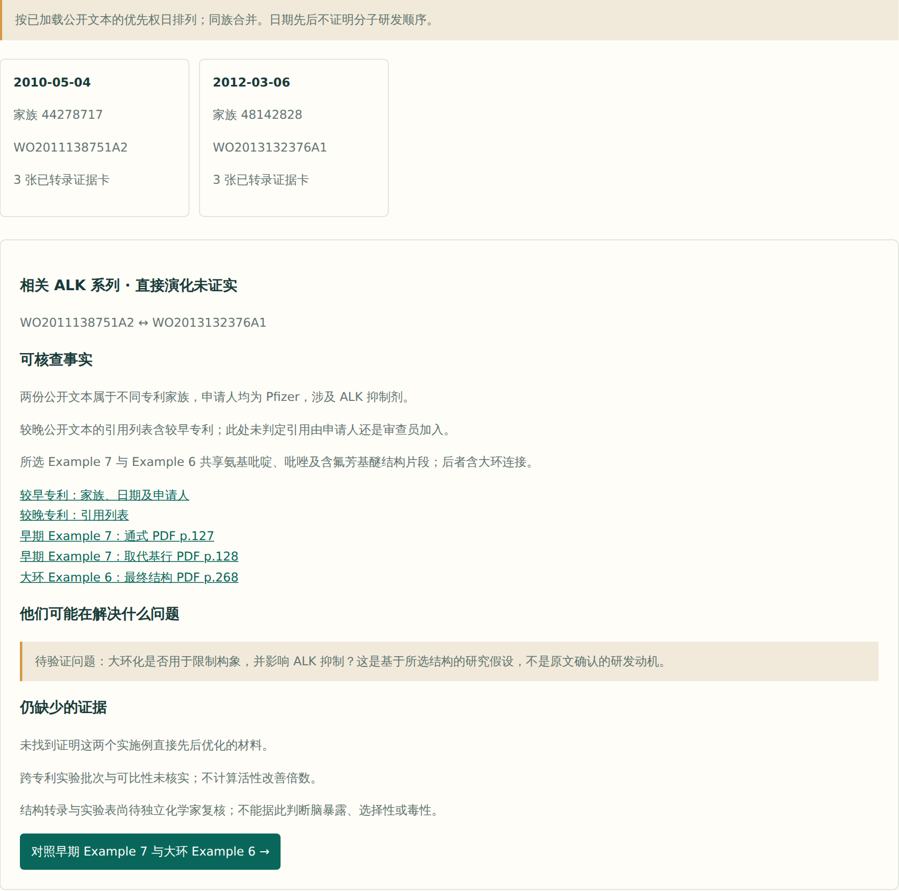
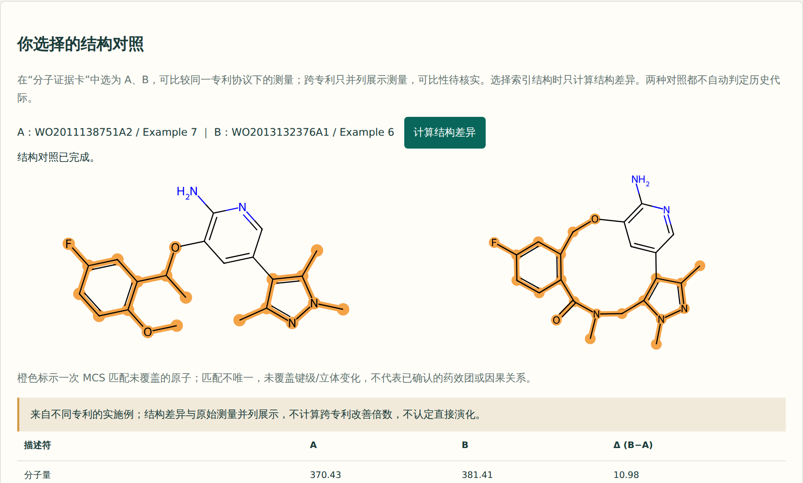
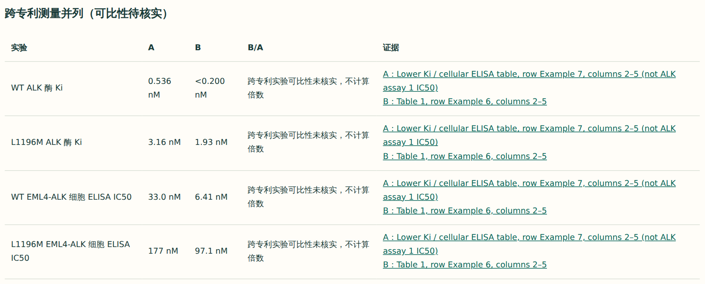
讲解要点
“大环化后提高了几倍”是最容易被直接算出来的数，但两份专利的实验批次和条件没有核实过，所以系统只并列、不算倍数，也不认定直接演化。它给出的是一个可以去验证的问题：大环化是否用于限制构象并影响 ALK 抑制。
活性提高了，其他性质付出了什么代价
“酰胺上的 N,N-二甲基改成 N-甲基（6f → 6e），活性变好了吗？外排会不会变差？”
操作（/evidence 页面）
- 来源选
CHEMBL3286195（洛拉替尼发现论文），A 选 6f，B 选 6e，点“分析结构变化”。 - 点“检查所选分子的测量”。
- 点“加入当前已检查分子对”，再点“汇总本批替换效果”。
- 第⑥步点“填入当前 A”，实验选
CHEMBL3293161（WT ALK Ki）、目标“数值降低”，生成候选方向；再把实验换成CHEMBL3293391（MDR1 外排比，同样希望降低）。
看什么
- 结构对齐：共同锚点 28 个重原子，差异在 R1（甲基 → 氢）；页面提示存在对称歧义，需核对原图。
- 7 项实验里 3 项可暂定计算，另外 4 项不计算。
- 酶活性：WT ALK Ki（CHEMBL3293161）22.0 → 2.8 nM，B/A = 0.127；L1196M Ki（CHEMBL3293162）310 → 35 nM，B/A = 0.113。
- 外排：MDR1 外排比（MDCK 细胞，CHEMBL3293391）7.6 → 17，B/A = 2.24，外排变差。
- 候选方向随性质变化：以酶 Ki 降低为目标时给出 6e 和验证计划；以外排比降低为目标时没有候选，6e 被列为相反案例。
- 台账中没有 6f 的两个细胞 IC50 记录（6e 为 116 nM 和 1665 nM），细胞层面的活性变化无法比较。
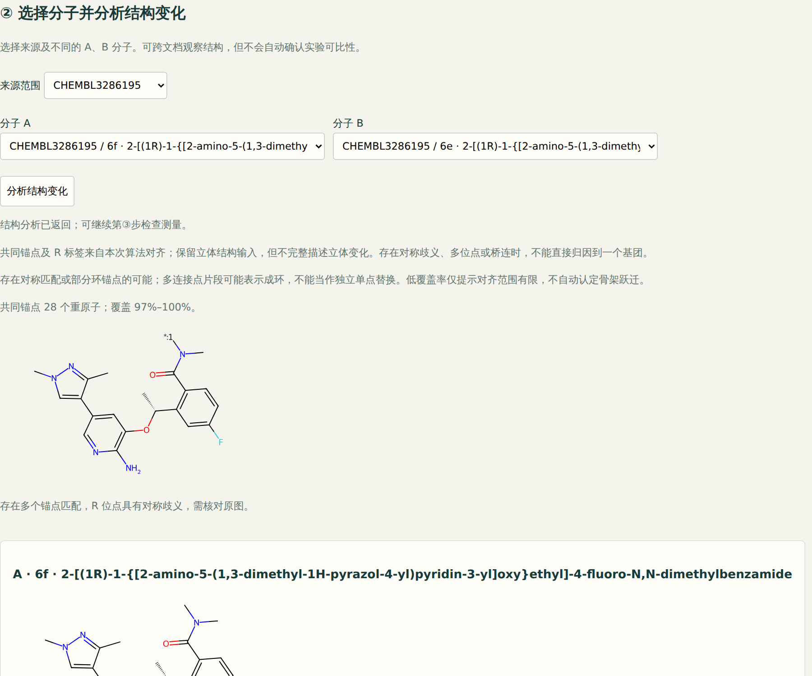
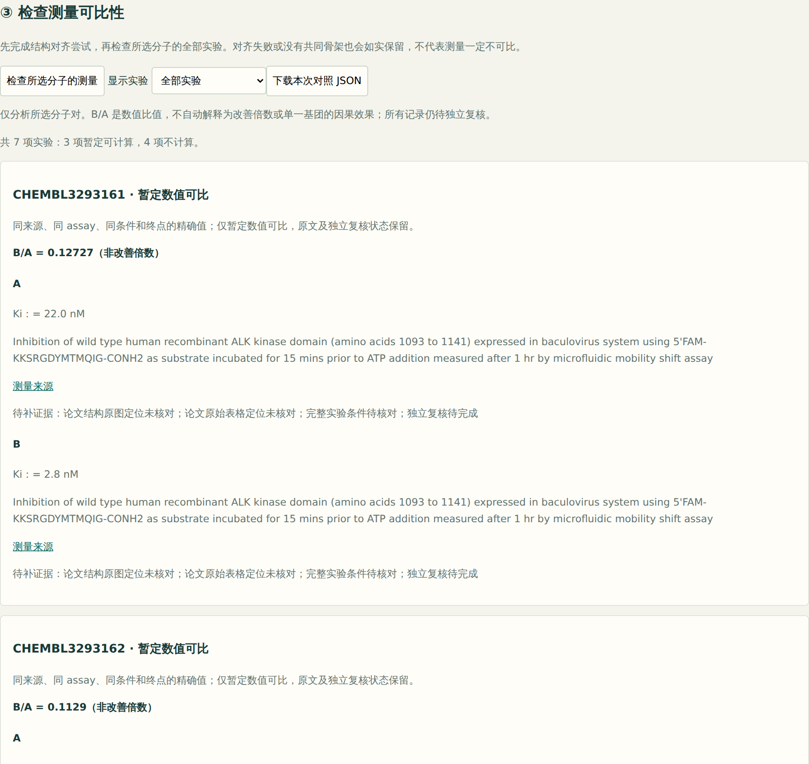
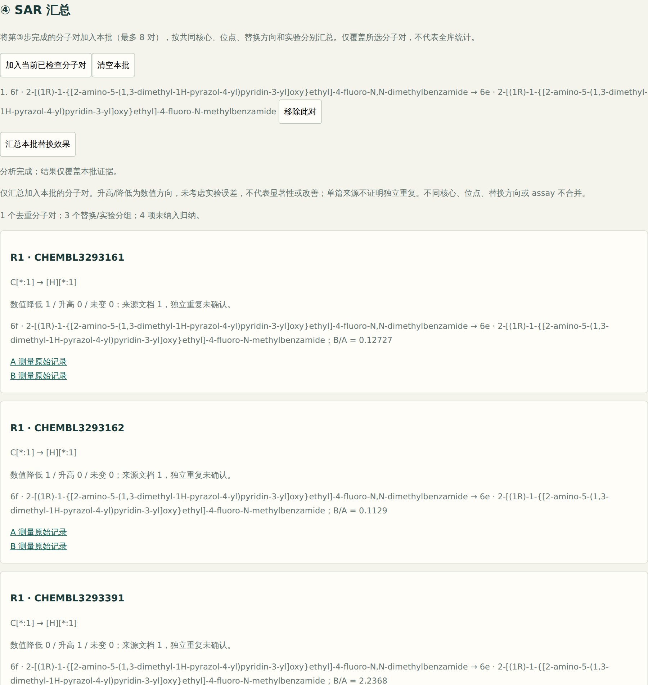
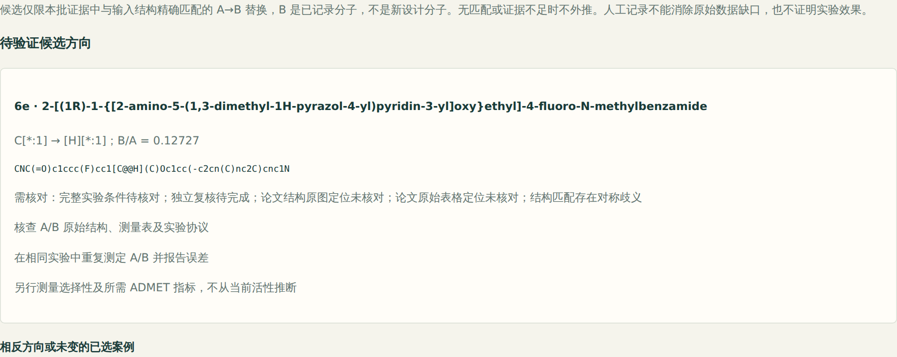
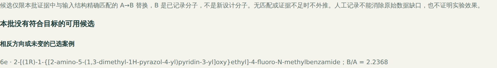
讲解要点
把这批数据直接交给大模型总结，很容易得到“N-去甲基化提高活性”这样一句话，外排变差和细胞数据缺失却被略过。系统按实验分开：酶活性有利、外排不利，于是不给“整体更优”的结论；候选也只从已记录的分子里挑，不生成新结构。把这种多性质取舍并排成一张表、并提示“先补测 6f 的细胞 IC50”，是下一步迭代（I2.7）要做的。
从一个结构找回同一条研发线
“手上只有洛拉替尼的结构，能不能找出它前面那一代化合物和专利？”
操作
- 首页输入类型切到 SMILES，检索方式选“相似性”，阈值填 50。
- 点“填入洛拉替尼 SMILES”，检索。
- 检索方式改为“子结构”，输入两代共有的氨基吡啶苄醚片段
Nc1ncccc1OCc1ccccc1，检索。
看什么
- 相似性 ≥ 50%：15 个命中，论文 13 个、WO2013132376A1 2 个，早期专利 WO2011138751A2 一个都没有。大环化后，洛拉替尼与早期无环化合物的 Morgan 相似度只有 0.19–0.27。
- 子结构：28 个命中，覆盖论文 22 个，两份专利的实施例全部找回（各 3 个）。
- 页面记录检索方式、阈值、指纹类型、标准化做了什么，以及检索范围（本地台账 37 个结构）。


讲解要点
相似度适合找类似物，不适合找骨架跃迁。联网时，同一个检索还可以勾选 ChEMBL 和 SureChEMBL（专利中提取的结构），并对任一命中查 PubChem 关联的专利与文献，远程命中都会用 RDKit 在本地复核一遍。
让 AI 助手帮忙整理，但它只能提交“待确认”
“如果让 AI 助手来帮我查数据、录数据，它会不会自己把数据‘确认’掉，或者自己算出一个倍数？”
操作
- 终端运行
python -m phase0.tools.demo。 - 这是一段脚本化的助手会话，调用的是 Claude Code 等客户端通过 MCP 使用的同一批 15 个工具。
看什么
- 第 4 步：同一专利、同一实验的 WT Ki，2.9 → 0.536 nM，暂定 B/A = 0.185，并注明“不是改善倍数”。
- 第 5 步：助手提交一条记录，状态只能是“待确认”，写入者是本次运行，附依据“PDF p.186 Ki 表 Example 7 行”。
- 第 6 步：助手试图直接提交“已确认”记录，被拒绝。第 7 步：参数名拼错，直接报错，不会变成不带筛选的查询。
- 多了一条 WT Ki 之后，比值不再计算：存在重复观测，不自动取平均。
- 最后在断网状态下重放整个会话，8/8 次调用结果一致。
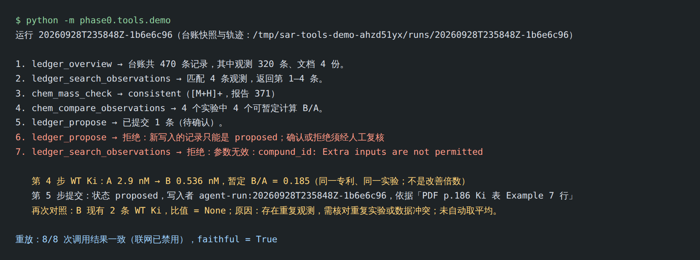
讲解要点
工具里根本没有“确认”“拒绝”“导入”，约束写在工具边界上，而不是写在提示词里；确认只能由具名的人带理由完成。这段会话是脚本化的，还没有接入真实大模型跑过。
自动抽取出错时，错的地方会被标出来
“以后大量专利靠自动抽取，抽错了我怎么知道？”
操作
- 终端运行
python -m phase0.extract.demo。 - 第一行写明：抽取器是模拟的，数据取自金标准，Example 6 故意漏掉一个氟原子。
看什么
- 页面分区：中间体在 PDF 第 125 页，实施例在第 127–128 页，活性表在第 186 页。
- 分级调用：结构化记录和专利全文补齐必填字段后，最贵的 PDF 图表识别没有调用。
- “需要人工核对”第一条：Example 6 置信度 low，原因是质谱不符（mass_mismatch）。
- 评测：错误 1 个，其中未被标出的 0 个。
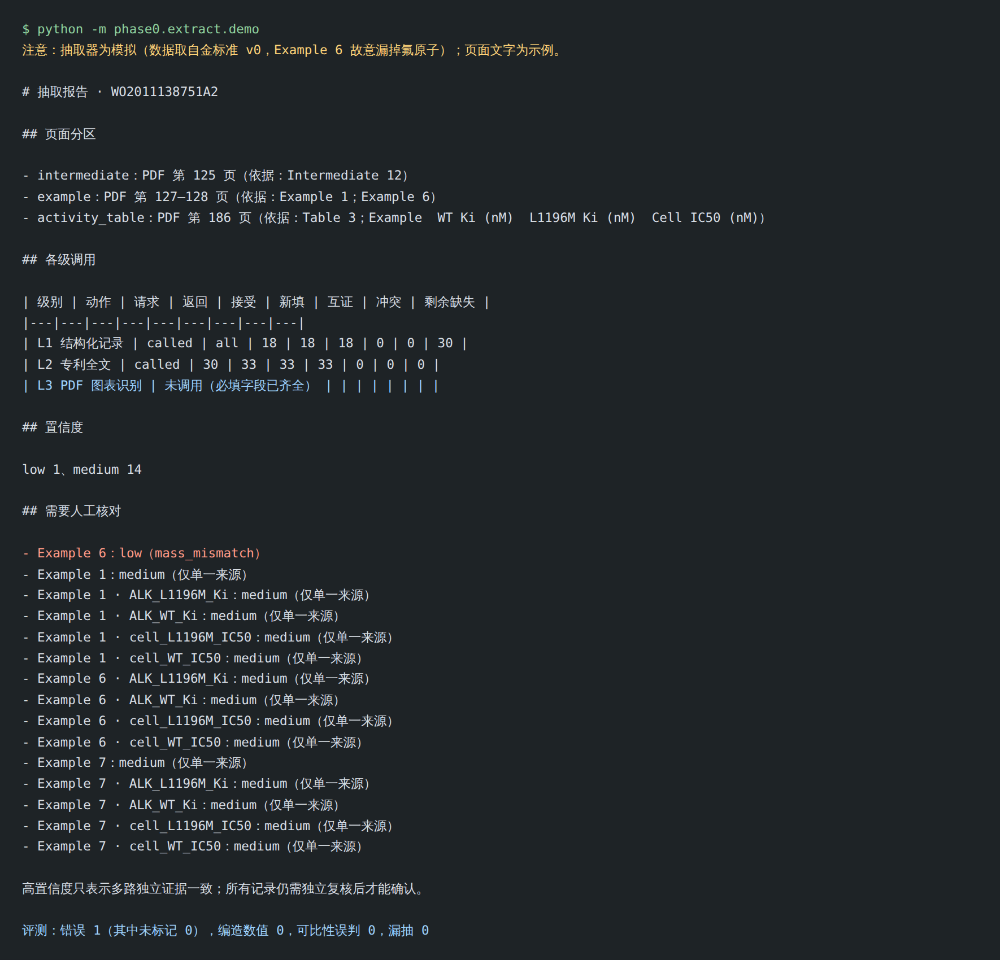
讲解要点
质谱校验能抓住原子数错误，但查不出同分异构和立体错误：两个来源给出同一个错误的异构体时，系统会给出高置信度，这个盲区已经写成测试。所以金标准和化学家复核不能省。真实抽取器还没有接入，也还没有真实的抽取准确率。
需要联网的场景
这些功能已经实现并用模拟服务器测试过，但开发环境访问不了外部数据库，还没有连通过。离线只能用虚构的返回数据截图，所以这里不附截图。在能联网的电脑上运行 python -m phase0.tools.verify_online 可以一次核对全部四个来源，之后可以按下面的路径现场演示或补拍截图。
| 场景 | 操作路径 | 讲解要点 |
|---|---|---|
| 从靶点到测量，再加入台账 | 输入类型切到“靶点”，输入 ALK → 选人源 ALK → 查看测量 → “将本页测量加入台账（待确认）” | 数值由服务端重新读取；缺限定符、缺结构、文档类型不明的记录被拒绝并说明原因；重复点击不新增 |
| 在专利化学中找相似结构 | 结构检索勾选“同时查询 SureChEMBL” → 某个命中点“查看含此化合物的专利” → “核实并加载专利” | SureChEMBL 的结构由自动标注从专利中提取，不说明是实施例或被权利要求覆盖；数据 CC BY 4.0，保留 SCHEMBL 编号 |
| 一个分子关联了哪些专利和文献 | 检索结构旁点“查询检索结构的 PubChem 专利与文献” | 已整理的两份专利排在最前；PubChem 与 SureChEMBL 的专利关联可能同源，并列显示，不当作两份独立证据 |